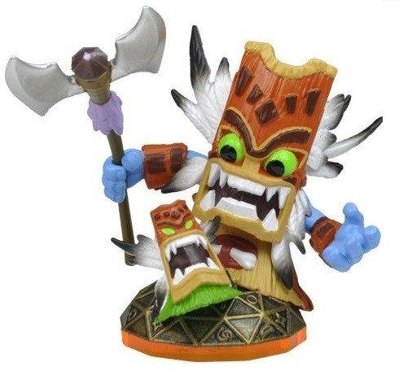
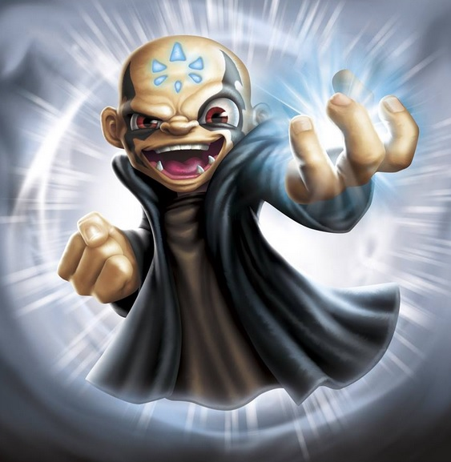

 The Skylanders are legendary heroes and champions, protectors of their world, Skylands, as well as the main playable characters in the Skylanders series. Using their powerful abilities, the Skylanders have defended their world for generations, keeping peace and balance.
At one point, Kaos banished many of the Skylanders to Earth, while others arrived by different means. Far away from the magic of Skylands, they shrunk and turned into immobile figures, requiring a Portal of Power in order to return to Skylands and come back to life.
Recruited by Portal Masters or graduated from Skylanders Academy, a new Skylander's image is engraved onto The Book of Skylanders and is bound to it.